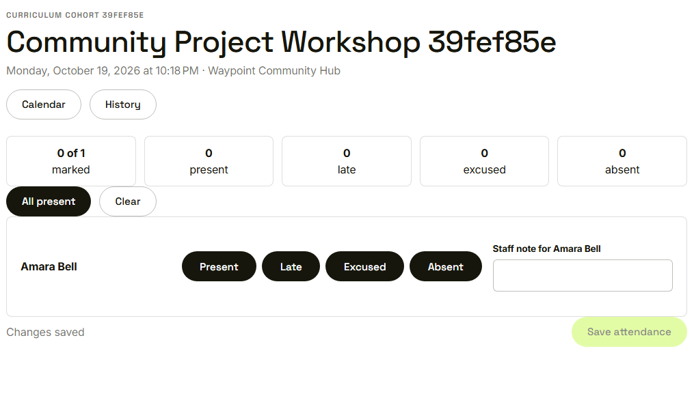
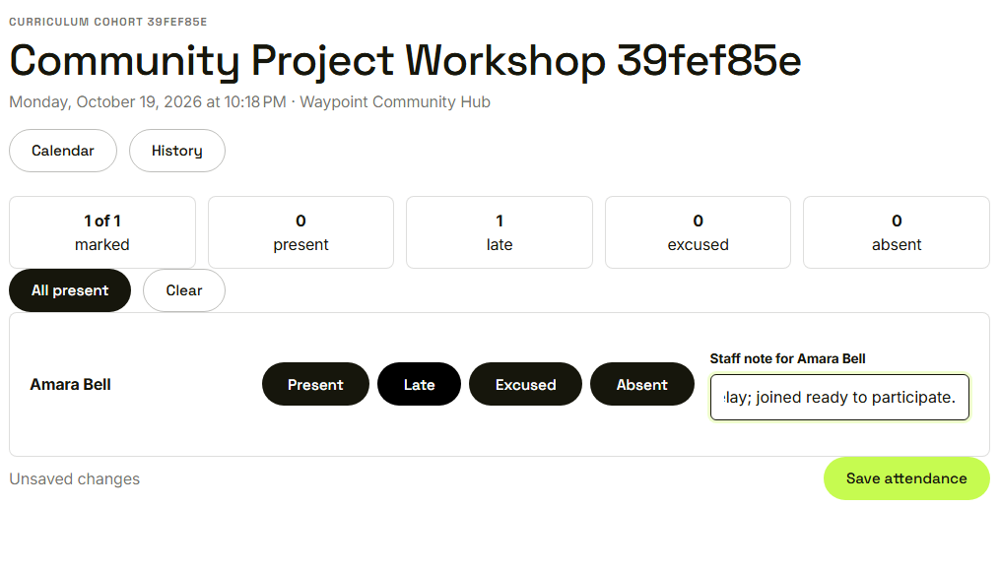
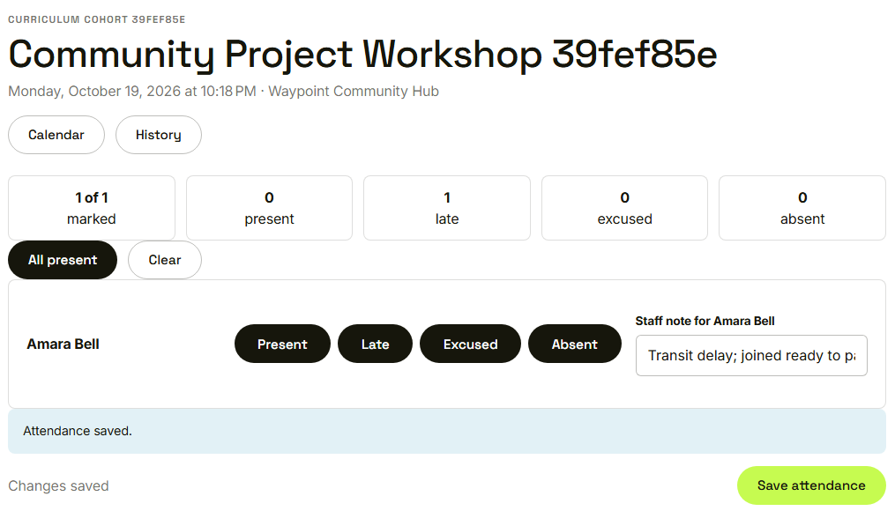

Waypoint · Video 071
Recording attendance
Mark the roster, add a note, save
One row for each youth

The session, the tally and the roster
Present, late, excused or absent

Late, with a staff note
Attendance saved

The session now has an attendance record
Things to remember
Present, late, excused or absent for each youth
A running tally of how many are marked
All present and clear speed up a big roster
Saving feeds attendance rates and badge streaks